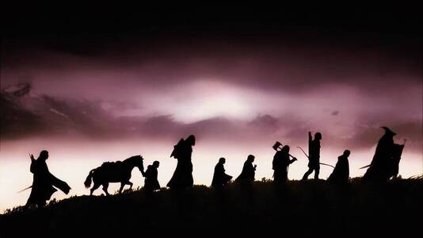
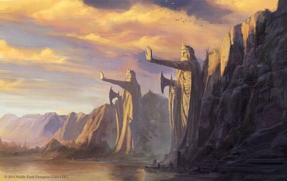
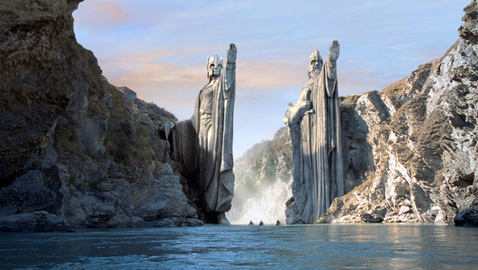

La tierra media
¿Que es la tierra media?
Tierra Media es el nombre de un continente ficticio en el que transcurren la mayor parte de las historias que el autor británico J. R. R. Tolkien escribió para su legendarium. La novela El Silmarillion narra la lucha que mantienen por el control del mundo y de la Tierra Media, los valar, los elfos y los hombres, con Morgoth y sus siervos. En épocas posteriores, después de la derrota de Morgoth y de su expulsión del mundo, su papel es continuado por su lugarteniente, Sauron, titular y principal antagonista de la novela El Señor de los Anillos.


